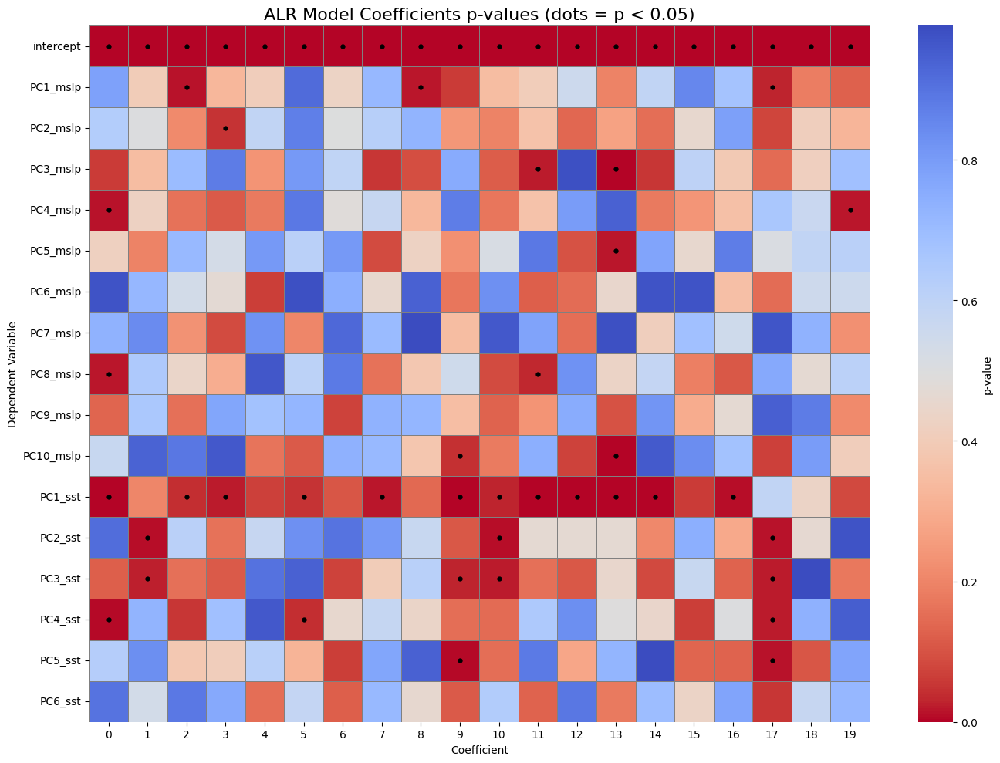
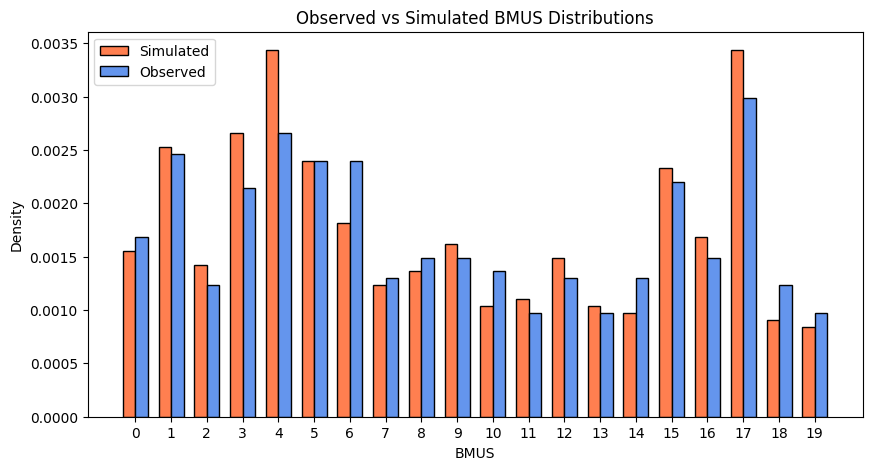
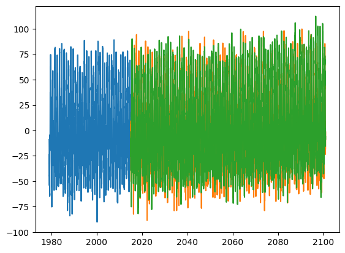

import os
import pandas as pd
import numpy as np
import xarray as xr
from bluemath_tk.teslakit.alr import ALR_WRP
import seaborn as sns
import matplotlib.pyplot as plt
Load Data#
#### Tracks
hist_tracks = xr.open_dataset('inputs/ibtracs_na_tracks.nc')
track_types = pd.read_csv('inputs/track_types_hist.csv')
#### Principal Components
era5_pcs_mslp = pd.read_csv('outputs/era5/era5_mslp_pcs.csv', index_col=0, parse_dates=True)
era5_pcs_mslp = era5_pcs_mslp.iloc[:,:10]
era5_pcs_sst = pd.read_csv('outputs/era5/era5_sst_pcs.csv', index_col=0, parse_dates=True)
def detrend_dataframe(df, degree=1):
"""
Detrend each column of a DataFrame using polynomial fit.
Parameters:
- df: DataFrame (columns = PCs, rows = time)
- degree: 1 = linear, 2 = quadratic
Returns:
- detrended DataFrame
"""
x = np.arange(len(df)) # time index
df_detrended = pd.DataFrame(index=df.index, columns=df.columns)
for col in df.columns:
y = df[col].values
# fit polynomial
coeffs = np.polyfit(x, y, degree)
trend = np.polyval(coeffs, x)
# remove trend
df_detrended[col] = y - trend
return df_detrended
#### Remove LongTerm Trend
era5_pcs_sst_detrended = detrend_dataframe(era5_pcs_sst, degree=2)
era5_pcs_sst = era5_pcs_sst_detrended.copy()
Dates of Maximum Intensity#
times_max_int = []
for track in hist_tracks.storm.values:
track_ds = hist_tracks.sel(storm=track)
time = track_ds.time.values
pres = track_ds.wmo_pres.values
min_pres_pos = np.nanargmin(pres)
min_pres_pos = 0
max_int_time = time[min_pres_pos]
formatted = np.datetime_as_string(max_int_time, unit='D')
times_max_int.append(formatted)
track_types['date'] = times_max_int
track_types.to_csv('outputs/ibtracs_na_tracks_max_int.csv', index=False)
Predictor#
#### 5 Day Average of PCs
era5_pcs_mslp_roll = era5_pcs_mslp.rolling("5D", center=True).mean()
era5_pcs_sst_roll = era5_pcs_sst.rolling("5D", center=True).mean()
era5_pcs_mslp_roll = era5_pcs_mslp_roll.add_suffix("_mslp")
era5_pcs_sst_roll = era5_pcs_sst_roll.add_suffix("_sst")
era5_pcs_roll = era5_pcs_mslp_roll.join(era5_pcs_sst_roll, how="inner")
Predictand#
era5_pcs_roll['TrackType'] = 1
for i in range(len(track_types)):
date = track_types['date'][i]
tt = track_types['Track_Type'][i] + 2
era5_pcs_roll.loc[date, 'TrackType'] = tt
Common Dates#
date_min = hist_tracks.isel(storm=0).time.values[0]
era5_pcs_roll = era5_pcs_roll[era5_pcs_roll.index >= date_min]
Logistic Regression Model#
covar_ds = era5_pcs_roll.iloc[:, :-1].to_xarray()
covar_ds = covar_ds.rename({'index':'time'})
nPCs = era5_pcs_roll.iloc[:, :-1].shape[1]
cov_names_list = era5_pcs_roll.iloc[:, :-1].columns.tolist()
cov_list = []
for i in range(nPCs):
cov_list.append(covar_ds[cov_names_list[i]].values)
cov_combined = np.hstack([cov_list]).T # shape (n_covariates, n_times)
cov_names_list = era5_pcs_roll.iloc[:, :-1].columns.tolist()
new_cov_norm = xr.DataArray(
cov_combined,
dims=["time", "n_covariates"],
coords={
"time": covar_ds.time.values,
"n_covariates": np.arange(cov_combined.shape[1]) # [0, 1, 2, 3, 4]
},
name="cov_norm"
)
covariates_ds = new_cov_norm.to_dataset()
covariates_ds = (covariates_ds - covariates_ds.mean(dim="time")) / covariates_ds.std(
dim="time"
)
covariates_ds["cov_names"] = (("n_covariates"), cov_names_list)
alr_model = ALR_WRP(
p_base="/lustre/geocean/WORK/users/alonsoap/personal/mini_projects/stochastic_gcms_clean_nc/outputs/tc_logit"
)
alr_terms = {
"mk_order": 0,
"constant": True,
"long_term": False,
"seasonality": (False, [2]),
"covariates": (
True,
covariates_ds,
),
}
nTT = track_types['Track_Type'].nunique() + 1 # +1 for the "no TC" type
df_bmus_fit = pd.DataFrame()
df_bmus_fit['time'] = covar_ds.time.values
df_bmus_fit['bmus'] = era5_pcs_roll.iloc[:, -1:].values.astype(int)
xds_bmus_fit = df_bmus_fit.set_index('time').to_xarray()
alr_model.SetFitData(
cluster_size=int(nTT),
xds_bmus_fit=xds_bmus_fit,
d_terms_settings=alr_terms,
)
alr_model.FitModel()
Fitting autoregressive logistic model ...
Optimization done in 0.62 seconds
pvals = alr_model.model.pvalues
plt.figure(figsize=(14, 10))
sns.heatmap(pvals,cmap="coolwarm_r",linewidths=0.5,linecolor='gray',cbar_kws={'label': 'p-value'})
# Add black dots for significant coefficients
for i in range(pvals.shape[0]):
for j in range(pvals.shape[1]):
if pvals.iloc[i, j] < 0.05:
plt.scatter(j + 0.5, i + 0.5, color='black', s=12.5, marker='o') # s is size
plt.title("ALR Model Coefficients p-values (dots = p < 0.05)", fontsize=16)
plt.ylabel("Dependent Variable")
plt.xlabel("Coefficient")
plt.tight_layout()
plt.show()

02. Forecast ERA5#
pcs_per_sim_list = [era5_pcs_roll.iloc[:, :-1]]
n_sims = 1
time = pcs_per_sim_list[0].index
cov_names = pcs_per_sim_list[0].columns
n_cov = len(cov_names)
cov_stack = np.stack([df.values for df in pcs_per_sim_list])
covar_sim = xr.Dataset(
data_vars=dict(
cov_values=(("n_sim", "time", "n_covariates"), cov_stack),
cov_names=(("n_sim", "n_covariates"),
np.tile(cov_names.values, (n_sims, 1)))
),
coords=dict(
n_sim=np.arange(n_sims),
time=time,
n_covariates=np.arange(n_cov),
)
)
for i in range(1):
simulated_daily_bmus = alr_model.Simulate(
num_sims=1,
time_sim=covar_sim.time.values,
xds_covars_sim=covar_sim.isel(n_sim=i),
)
ALR model fit : 1981-09-04 --- 2023-11-22
ALR model sim : 1981-09-04 --- 2023-11-22
Launching 1 simulations...
Sim. Num. 001: 100%|██████████| 15420/15420 [00:05<00:00, 2896.34it/s]
import matplotlib.pyplot as plt
import numpy as np
# Flatten simulated BMUs for comparison
sim_vals = simulated_daily_bmus.evbmus_sims.values.flatten() - 2
fit_vals = xds_bmus_fit.bmus.values - 2
bmus = np.arange(0,20,1)
# Compute densities (or frequencies)
sim_counts = [np.mean(sim_vals == bmu) for bmu in bmus]
fit_counts = [np.mean(fit_vals == bmu) for bmu in bmus]
# Width for bars
width = 0.35
x = np.arange(len(bmus))
plt.figure(figsize=(10,5))
plt.bar(x - width/2, sim_counts, width, label='Simulated', color='coral', edgecolor='black')
plt.bar(x + width/2, fit_counts, width, label='Observed', color='cornflowerblue', edgecolor='black')
plt.xticks(x, bmus)
plt.xlabel('BMUS')
plt.ylabel('Density')
plt.title('Observed vs Simulated BMUS Distributions')
plt.legend()
plt.show()

03. Forecast GCM#
models = [ 'ec_earth3_veg_lr']
scenarios = ['historical', 'ssp245', 'ssp585']
simulated_daily_bmus_list = []
for model in models:
for ssp in scenarios:
os.makedirs(f'outputs/tc_logit/{model}/{ssp}', exist_ok=True)
gcm_pcs_mslp = pd.read_csv(f'outputs/cmip6_models/{model}/{ssp}/mslp_{model}_{ssp}_pcs.csv', index_col=0, parse_dates=True)
gcm_pcs_mslp = gcm_pcs_mslp.iloc[:,:10]
gcm_pcs_sst = pd.read_csv(f'outputs/cmip6_models/{model}/{ssp}/sst_{model}_{ssp}_pcs.csv', index_col=0, parse_dates=True)
gcm_pcs_sst_detrended = detrend_dataframe(gcm_pcs_sst, degree=2)
gcm_pcs_sst = gcm_pcs_sst_detrended.copy()
gcm_pcs_mslp_roll = gcm_pcs_mslp.rolling("5D", center=True).mean()
gcm_pcs_sst_roll = gcm_pcs_sst.rolling("5D", center=True).mean()
gcm_pcs_mslp_roll = gcm_pcs_mslp_roll.add_suffix("_mslp")
gcm_pcs_sst_roll = gcm_pcs_sst_roll.add_suffix("_sst")
gcm_pcs_mslp_roll.index = pd.to_datetime(gcm_pcs_mslp_roll.index).normalize()
gcm_pcs_sst_roll.index = pd.to_datetime(gcm_pcs_sst_roll.index).normalize()
gcm_pcs_roll = gcm_pcs_mslp_roll.join(gcm_pcs_sst_roll, how="inner")
pcs_per_sim_list = [gcm_pcs_roll]
n_sims = 1
time = pcs_per_sim_list[0].index
cov_names = pcs_per_sim_list[0].columns
n_cov = len(cov_names)
cov_stack = np.stack([df.values for df in pcs_per_sim_list])
covar_sim = xr.Dataset(
data_vars=dict(
cov_values=(("n_sim", "time", "n_covariates"), cov_stack),
cov_names=(("n_sim", "n_covariates"),np.tile(cov_names.values, (n_sims, 1)))),
coords=dict(n_sim=np.arange(n_sims),time=time,n_covariates=np.arange(n_cov),))
covar_sim
plt.plot(covar_sim.time.values, covar_sim.cov_values.isel(n_sim=0,n_covariates=0))
for i in range(1):
simulated_daily_bmus = alr_model.Simulate(
num_sims=5,
time_sim=covar_sim.time.values,
xds_covars_sim=covar_sim.isel(n_sim=0),
)
simulated_daily_bmus.to_netcdf(f'outputs/tc_logit/{model}/{ssp}/simulated_tracktypes_{model}_{ssp}.nc')
ALR model fit : 1981-09-04 --- 2023-11-22
ALR model sim : 1979-01-31 --- 2014-12-31
Launching 5 simulations...
Sim. Num. 001: 100%|██████████| 13119/13119 [00:04<00:00, 2978.60it/s]
Sim. Num. 002: 100%|██████████| 13119/13119 [00:04<00:00, 2973.58it/s]
Sim. Num. 003: 100%|██████████| 13119/13119 [00:04<00:00, 2969.19it/s]
Sim. Num. 004: 100%|██████████| 13119/13119 [00:04<00:00, 2963.72it/s]
Sim. Num. 005: 100%|██████████| 13119/13119 [00:04<00:00, 2962.16it/s]
ALR model fit : 1981-09-04 --- 2023-11-22
ALR model sim : 2015-01-31 --- 2100-12-31
Launching 5 simulations...
Sim. Num. 001: 100%|██████████| 31381/31381 [00:10<00:00, 2898.38it/s]
Sim. Num. 002: 100%|██████████| 31381/31381 [00:11<00:00, 2847.88it/s]
Sim. Num. 003: 100%|██████████| 31381/31381 [00:11<00:00, 2842.84it/s]
Sim. Num. 004: 100%|██████████| 31381/31381 [00:11<00:00, 2814.18it/s]
Sim. Num. 005: 100%|██████████| 31381/31381 [00:10<00:00, 2902.81it/s]
ALR model fit : 1981-09-04 --- 2023-11-22
ALR model sim : 2015-01-31 --- 2100-12-31
Launching 5 simulations...
Sim. Num. 001: 100%|██████████| 31381/31381 [00:10<00:00, 2946.11it/s]
Sim. Num. 002: 100%|██████████| 31381/31381 [00:10<00:00, 2940.85it/s]
Sim. Num. 003: 100%|██████████| 31381/31381 [00:10<00:00, 2899.77it/s]
Sim. Num. 004: 100%|██████████| 31381/31381 [00:10<00:00, 2908.32it/s]
Sim. Num. 005: 100%|██████████| 31381/31381 [00:10<00:00, 2919.94it/s]
